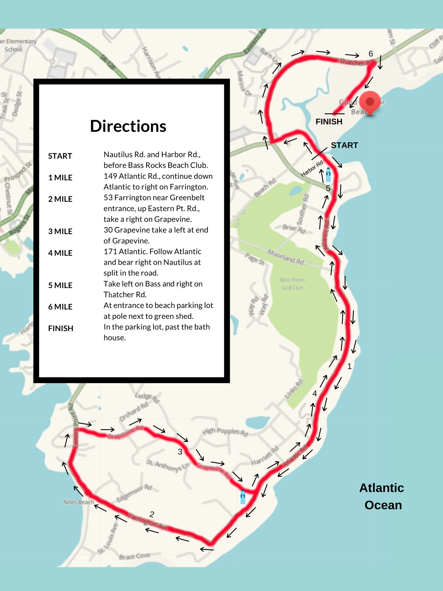
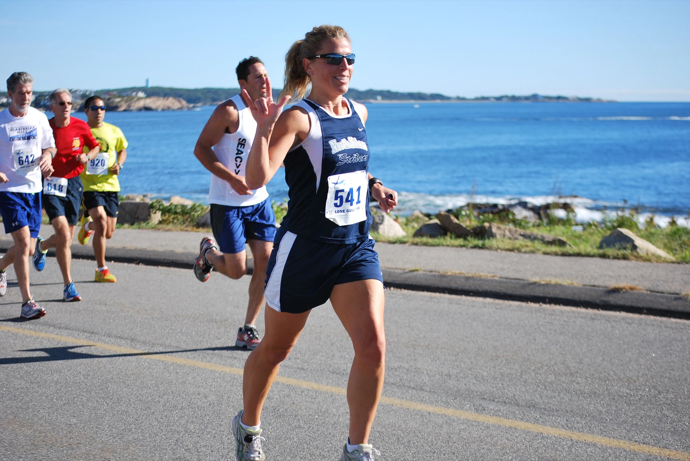

Good Harbor Beach · Gloucester, MA
Scenic. Fast. Meaningful. — Run Gloucester.
An iconic seaside road race along the rocky Atlantic coast of Cape Ann — a USATF Grand Prix event, run for a cause that matters.
A North Shore Classic
The Lone Gull 10K is one of the North Shore’s most beloved road races: a fast, scenic run along Gloucester’s open Atlantic shoreline, starting at Good Harbor Beach with the salt air at your back and the ocean in view nearly the whole way. Runners, walkers, and adaptive athletes return year after year for the course, the community, and the cause behind it.
Why Runners Love It
Coastal views, rolling terrain, and the best of Cape Ann.
An accurate, fast, and competitive 10K course.
Part of the USATF Grand Prix — compete for points.
Runners, walkers, and adaptive athletes.
A hot breakfast with baked goods after the race.
Race Day
Secure your spot for the Lone Gull 10K through Race Roster. Save with USATF member pricing.
Register on Race RosterQuestions? Contact the race director at director@northshorerunfest.com
The Route

Starting near Good Harbor Beach, the Lone Gull 10K runs Gloucester’s classic oceanfront roads along the Bass Rocks and Atlantic Road shoreline — a rolling, fast course with sweeping Atlantic views from start to finish.
USATF-certified and part of the Grand Prix Series, it’s a great course for a personal best — or a first 10K by the sea.
Download Course Map (PDF)
Every Stride Gives Back
All proceeds from the Lone Gull 10K benefit The Children’s Center for Communication / Beverly School for the Deaf (CCCBSD) — providing specialized education and support that enables deaf and disabled individuals to reach their full potential.
When you run the Lone Gull, you’re helping fund the programs, therapies, and specialized education that change lives across the North Shore and beyond.
Learn About CCCBSDAlso on the North Shore
Love racing the North Shore? Add another to your calendar. North Shore Runfest is a 5K & 8K in Salem, MA — “more than a race: it’s an event.”
Proudly Supported By
The Lone Gull 10K is made possible by the generous support of local businesses and partners.
Good to Know
Parking is available near the start by Good Harbor Beach. [Confirm lots & overflow.]
Chip timing, a USATF-certified course, and a hot post-race breakfast with baked goods.
The race is held rain or shine. Dress for a coastal September morning by the water.
Awards for top overall and age-group finishers, plus USATF Grand Prix points. [Confirm categories.]
Gloucester is about 45 minutes north of Boston. Nearby hotels and Airbnbs make it an easy weekend trip.
Race Director · director@northshorerunfest.com
Join us Sunday, September 20, 2026 for the Lone Gull 10K at Good Harbor Beach.
Register Now